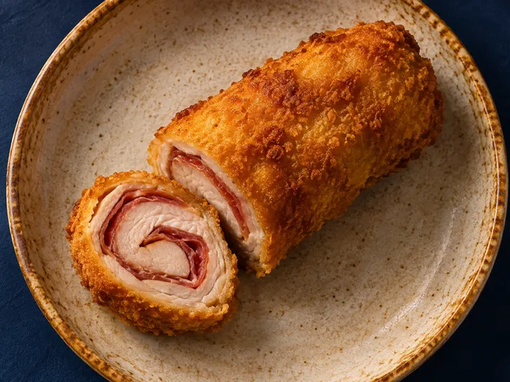

HELIO GASTRO
CÓRDOBA · GUÍA GASTRONÓMICA
Descubre Córdoba a bocados
Descubre qué comer en Córdoba, consulta precios de carta y encuentra dónde disfrutarlo
 Manolo te orienta
Manolo te orienta
¿Con hambre y sin ideas? ¡Para eso estoy yo!

¿Qué plan tienes?
Elige un momento del día para adaptar platos y presupuesto. Los horarios todavía requieren verificación.
Sabores de Córdoba
Acceso directoElige un plato y descubre directamente opciones documentadas de nuestra base, separadas por variante y formato. Más barato no significa mejor.
Has pasado al momento de comida para explorar Sabores de Córdoba.
¿Qué te apetece?
🔎Compara solo precios documentados de un mismo formato. Si falta el precio en ese formato, consulta la carta.
Resultados
0 lugaresCómo interpretar precios y disponibilidad
El límite solo se puede comprobar cuando existe un precio documentado. Las fichas sin precio se muestran como desconocidas, no como ofertas dentro del presupuesto.
★ Mis tabernas favoritas
0 favoritosGuardadas solo en este navegador. Puedes consultarlas sin volver a buscar.
Comparador
0 / 3Elige hasta tres establecimientos. Para comparar precios, selecciona un mismo formato en el buscador. Las cantidades reales pueden variar entre locales.
🔍 Nuestro criterio
Confirmado significa coste publicado y verificable, con fuente y fecha. Estimado indica una orientación, nunca el precio de una carta.
No inventamos reseñas, puntuaciones ni disponibilidad. Si no sabemos algo, lo indicamos.